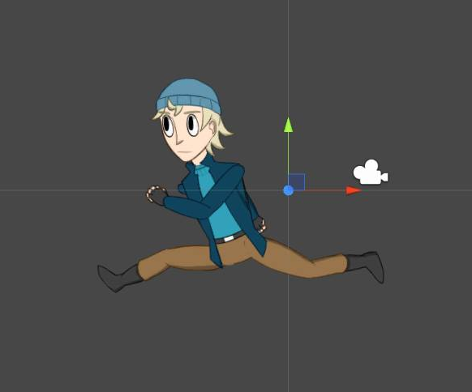

Where Time is Everything
Metroidvania is a 2D Side Scrolling Platform Puzzle Game.
To solve the game's various puzzles and progress through the game, the player must explore the possibilities of not only where they existed in the puzzle, but also when they existed.
I worked on this VGDC project as the Lead Programmer
Topics
Personal Growth
- Unity Programming
- Algorithms
- Teamwork
- Down-The-Hierarchy Communication

Team Members
- Timothy Harvey (Producer)
- Ryan Gonzales (Design)
- Aaron Ching (Design)
- Wesley Wu (Program Lead)
- Jude Collins (Program)
- Juston Lin (Program)
- Steven Nguyen (Program)
- Kirstie Delos Reyes (Environmental Art)
- Melody Chung (Animation)
- Jennifer Chen (Sound)
About
It was my third year of VGDC, and by this time, I had dropped out of the responsibility of leading VGDC's Audio Department. I wasn't too keen on leading as a club officer. The same goes for game projects. I'd had a lot of game ideas at the time, and my friends kept urging me to pitch those ideas into our VGDC project listings. I was really against it, though. I think it was mainly that I'm afraid I might let people down. I'd never really built any leadership experience since then. And since I didn't want to lead a game but wanted to work on a game, I decided I would join a new project. Funnily enough though, since I had so much experience in working on games compared to my teammates, I ended up having to lead anyway.
Metroidvania, in particular, stood out to me because it was the only 2D side-view game with a very clear vision for what the game would be. The story was originally about students fighting off zombies in school. But right from the first meeting, we decided that we wanted a story with a little more complexity. So our game is now about a time-travelling scientist in a post-apocalyptic world. Here's the full story if you're interested.